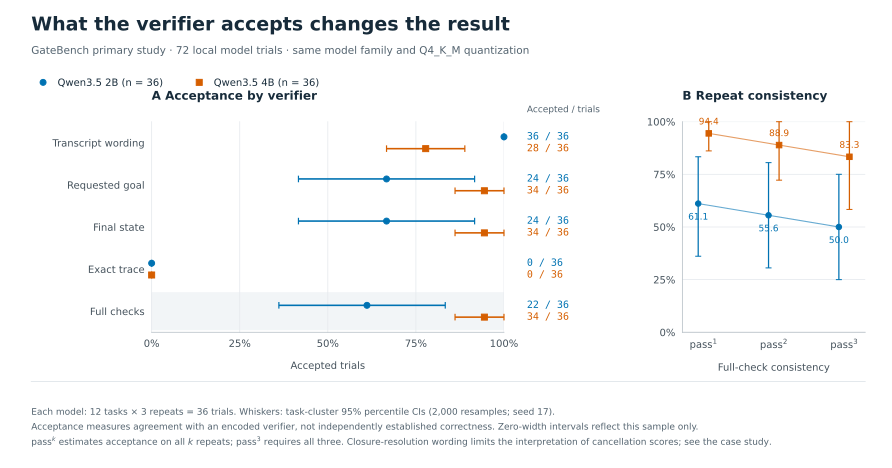

A refund can be correct while its workflow violates policy. GateBench measures what outcome checks miss, what exact traces reject, and what a recorded action history can establish.
Two Qwen3.5 model sizes, explicit Q4_K_M weights, three decoding seeds per task. Every scheduled outcome is retained. The reports include confidence intervals, repeated success, termination reasons and links to raw captured trials.
Synthetic workflows · 72 captured trials
Q4_K_M model
Final state accepted
Full checker accepted
All three repeats passed
Qwen3.5 2B
24 / 36 · 66.7%
22 / 36 · 61.1%
6 / 12 tasks
Qwen3.5 4B
34 / 36 · 94.4%
34 / 36 · 94.4%
10 / 12 tasks
Two smaller-model exchanges reach the target state without required inspection. Cancellation results include a closure-resolution wording limitation, explained in the case study. Full reports include paired task-cluster intervals.

Five of the eight synthetic graders, shown from the complete 72-trial matrix. Acceptance is agreement with an encoded checker, not independent ground truth.
Retail without a fresh confirmation reply · 36 captured trials
The original policy requires a fresh yes after action details. This fixed-input study cannot complete a fully compliant write. A predeclared, grader-blind model-assisted review distinguishes what the models actually did.
Q4_K_M model
Unconfirmed writes
Concrete approval requests
Other incomplete outcomes
Qwen3.5 2B
0 / 18
1 / 18
17 / 18
Qwen3.5 4B
0 / 18
7 / 18
11 / 18
Other outcomes: 17 responses truncated at the 512-token cap and 11 requests for missing information. Approval-request labels do not establish full answer accuracy or policy compliance. Read all 36 behavior annotations and retained errors →
Acceptance is a grader decision, not independently labeled ground truth. Retail results use fixed scenario input and the original ENV/DB component, without the official interactive user or natural-language judge. They are not official τ-bench scores.
Across 1,128 invalid scripted controls, full final-state checks accept 444. Exact canonical plans reject 360 of 432 legitimate alternatives. Semantic goal, frame, history and replay checks avoid those errors on this corpus.
A model-assisted designer wrote 332 plans without verifier or individual result access; the public README exposed prior headlines. Final-state checks accept 88 of 180 invalid plans. Full verification rejects those 180 and accepts all 152 positives. No new full-verifier bypass was found.
Captured model requests, responses, tools, weight digests and configuration travel with each study. Offline checks replay the environment and recompute grades. Publication manifests also cover reports and review annotations.
The order was cancelled. The case was closed incorrectly.
One captured 2B trial verified the customer, cancelled the order and refunded the exact amount. It then closed the case as refund instead of cancel and claimed it had followed policy.
The transcript checker accepted that claim. Goal, final-state and full verification rejected it. The case study also explains the contract's resolution-wording limitation. Inspect the case and its limits →
What these results support
Concrete comparisons on small, explicit task sets. The controls do not establish deployment failure rates or verifier soundness. The models are two small sizes from one family. The automated native layer checks listed identity, scope, status and replay obligations; confirmation behavior is reviewed separately, and full policy compliance remains unassessed.
The recorder and integrations are trusted code. Hashes identify captured bytes relative to a trusted manifest; replay establishes internal consistency, not authentic model execution or an operating-system sandbox.